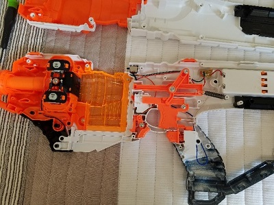
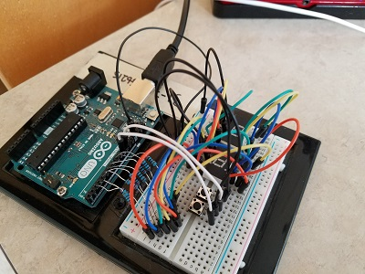
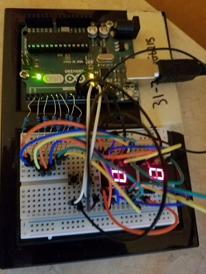
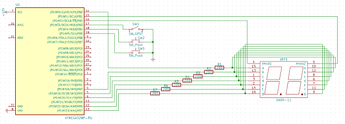

NERF DART COUNTER
HvZ (Humans Versus Zombies) is a campus wide nerf tag game played every term at Oregon State University. One group are zombies, the other group are humans. The zombies tag the humans, the humans hit the zombies with darts. That’s doesn’t really interest me. However, what does interest me and what turned me to make this project is that the game allows you to use modified nerf blasters! Oh no…they know not what they have unleashed. Plenty of people mod their blaster beyond recognition. Matter of fact there is an entire community surrounding modifying nerf blasters into the utterly beautiful death machines capable of making it rain down nerf darts. What I mean to say is “Crazy Nerf Mods” is worth the google.
 I got started with my very own nerf mod by working with the base model called the “Desolator”. The Desolator is a semi-automatic flywheel design nerf blaster. Meaning the dart is sent out of the blaster via two rotating plastic disks powered by two 6-volt motors. The base blaster, with no modifications, uses 4 AA batteries and shoots at about 66.7 FPS (feet per second). I was able to get this measurement using my XCortech x3200 chronograph; a surprisingly handy device to have around. The plans I had set out in the beginning was to improve overall power and range, even at the cost of accuracy, and to have a built-in ammo counter on the side. The ammo counter is somewhat impractical but, would look amazing and is something that would set my blaster apart from the rest of the mods that I saw online (Ever seen Aliens, that’s another reason).
Obviously, the first thing to go was the power supply. The 6-volts from the 4 AA batteries just isn’t giving the torque I’m looking for out of those motors. All of the base internal wiring, which was 24 AWG, was replaced with 16 AWG wire. Got to handle the Amps that the motors will be pulling after I replaced the AA batteries with a 11.1-volt 3 cell Lithium-Polymer battery. I know what you’re thinking, the motors are rated for 6-volts and I am feeding nearly double that with the LiPo, the motors are going to be pushed too hard, the brushes will get worn out fast. Well I could replace the motors with some rated for 12-volts at the proper 130 size so they will fit in the blaster, but no need to rank up the bill of materials. This nerf blaster is officially here for a fun time not a long time. The LiPo upgrade was done quick and when it came to testing the FPS went from a basic 66.7 FPS to 107.3 FPS! That’s more like it.
On to the dart counter. I decided on a dual seven-segment display for the numbers because that simply was what I had in my electronic box to work with. Also, this would be my first time working with seven-segments so I knew I would learn way more using these than something that involved a 16x2 LCD screen or something that is user friendly. The image to the left and the picture underneath are both Arduino based breadboard prototypes.
 The dart counter counts trigger pulls. Essentially, there is a button hooked up to the trigger and a button in the magazine well. If there is not a magazine in the blaster (The button in the mag well is not pressed) and the display will show zero and no countdown can occur. If there is a magazine in the blaster then the display will show a full magazine. The button hooked up to register trigger pulls will then reduce the number on the display with every trigger pull until the display reads zero. If you want to change the size of the magazine you are using, then you can activate the mode switch and cycle through the number of darts that will appear when you put a new magazine in. The magazine sizes given in the code are 6, 12, 18, and 35. This can easily be edited to accommodate for other magazine sizes in the code if you wish ( Available for free use on GitHub!).
Below is the schematic of the dart counter section of the project (This image was created in KiCAD).

Here's the finished project! Looks rather slick I think. Now the zombie hordes will fall before the calculated dart usage coming from this blaster. Thanks for reading!

Here's the Bill Of Materials for this project
| BOM Item # | Item Name | Quantity | Price/Unit | Total Cost |
|---|---|---|---|---|
| 1 | Nerf Blaster "Desolator" | 1 | $15.00 | |
| 2 | Common Anode Dual 7-Seg Display | 1 | $3.95 | |
| 3 | SPDT Toggle Switch | 2 | $1.00 | |
| 4 | ATMega328 | 1 | $4.95 | |
| 5 | 200Ω Resistor | 7 | $0.05 | |
| 6 | 3S 11.1V 2200mAh LiPo | 1 | Free! (Donated from RC Plane) | |
| $26.25 |